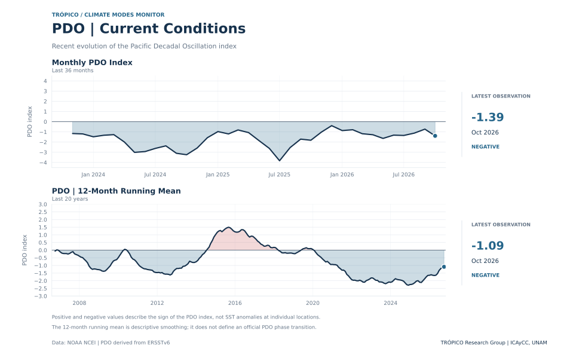
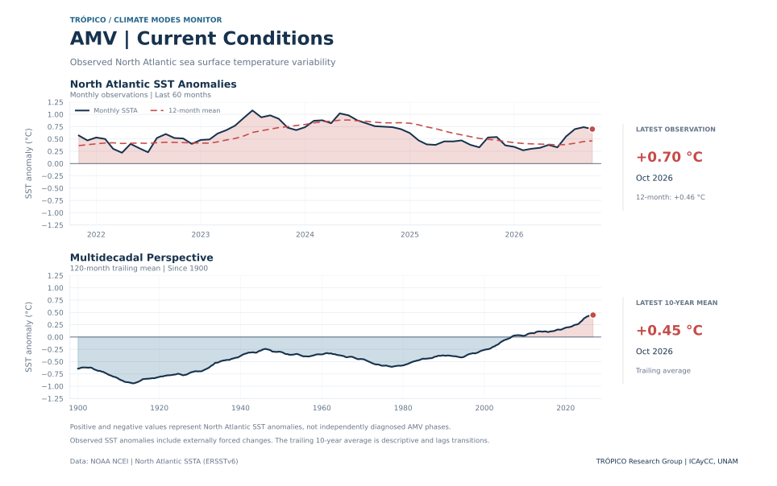
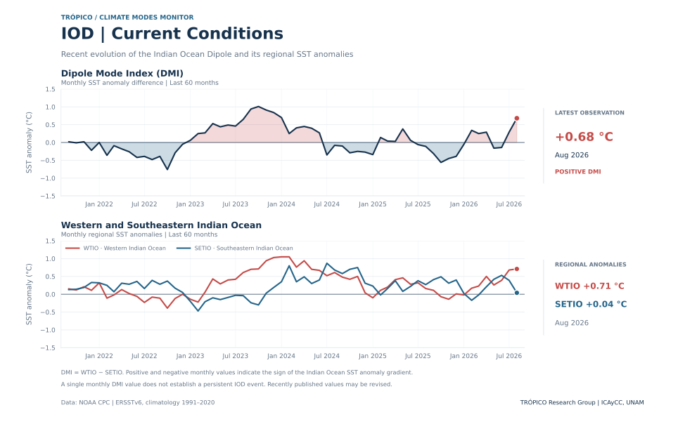

ENSO
El Niño–Southern Oscillation
—
Latest RONI
Explore ENSO ↗
Climate observation / Large-scale variability
Monitoring large-scale climate variability across the ocean–atmosphere system. Explore major climate modes through updated indices, historical records, and scientific visualizations.
01 / Overview
Five selected modes spanning the tropical oceans, North Pacific, North Atlantic, and equatorial stratosphere.
El Niño–Southern Oscillation
Quasi-Biennial Oscillation
Pacific Decadal Oscillation
Atlantic Multidecadal Variability
Indian Ocean Dipole
02 / Tropical Pacific
A coupled pattern of tropical Pacific ocean–atmosphere variability with far-reaching climate teleconnections.
Latest available observations. Each index retains its own observation period.
Interpretation: A single index threshold crossing does not establish an ENSO episode. Persistence and ocean–atmosphere coupling matter.
Recent conditions, historical variability, and differences between RONI and ONI.

03 / Equatorial stratosphere
Alternating easterly and westerly wind regimes in the equatorial stratosphere, characterized by downward propagation over time.
Monthly mean equatorial zonal winds at 30 and 50 hPa.
Interpretation: Positive zonal winds are westerly (eastward); negative winds are easterly (westward). One pressure level cannot represent the complete QBO vertical structure.
Latest available Singapore vertical profile: —
Recent wind variations, the historical record, and the downward propagation of stratospheric wind regimes.

04 / North Pacific
A prominent pattern of North Pacific sea surface temperature variability, with fluctuations from monthly to decadal timescales.
Monthly index and descriptive trailing means derived from NOAA NCEI ERSSTv6.
Interpretation: Positive and negative values describe the sign of the PDO index. Trailing means are descriptive smoothing, not independent indices. PDO index values are displayed without °C units.
Recent conditions, historical evolution, and the spatial SST association with the PDO.

05 / North Atlantic
Monitoring observed North Atlantic sea surface temperature anomalies and their evolution from monthly to multidecadal timescales.
Latest observations and descriptive trailing averages for 0–60°N.
Interpretation: These are observed North Atlantic SST anomalies, which include internally generated variability and externally forced changes. Their sign is not a diagnosis of an internal AMV phase.
Recent North Atlantic SST conditions, the historical record, and the latest monthly SST anomaly map.

06 / Tropical Indian Ocean
A pattern of tropical Indian Ocean sea surface temperature variability, measured by the difference between western and southeastern ocean anomalies.
Dipole Mode Index and regional sea surface temperature anomalies. All values are published by NOAA CPC.
Interpretation: DMI = WTIO − SETIO. The sign of one monthly DMI value describes the SST anomaly gradient; it does not by itself establish a persistent IOD event. Observation months can differ from those of other climate modes.
Explore the recent DMI and regional anomalies, the historical record since 1950, and the latest Indian Ocean SST anomaly map.

07 / Transparency
Index definitions, observational sources and update procedures.
RONI measures relative Niño 3.4 SST variability with a variance adjustment. Conventional Niño 3.4 and ONI are shown for comparison. Three-month indices are assigned to their central month.
Source: NOAA Climate Prediction Center .
Monthly mean equatorial zonal winds at 30 and 50 hPa are provided by NOAA CPC. The time–height diagram uses Singapore radiosonde observations maintained by KIT. These are different datasets and their values may differ.
The monthly PDO series is derived from ERSSTv6. The 12-month and 120-month running means are descriptive smoothing. The spatial figure shows an SST regression over 1991–2020, not the defining PDO EOF or a current SST map.
Source: NOAA NCEI / ERSSTv6 .
The North Atlantic indicator is the observed regional SST anomaly for 0–60°N, distributed by NOAA NCEI. Its monthly and smoothed values include both internal variability and externally forced changes. The latest map shows observed ERSSTv6 SST anomalies, not an internal AMV spatial pattern.
Source: NOAA NCEI / ERSSTv6 .
The monthly Dipole Mode Index (DMI) is the difference between SST anomalies in the western tropical Indian Ocean (WTIO, 50°–70°E, 10°S–10°N) and southeastern tropical Indian Ocean (SETIO, 90°–110°E, 10°S–0°). Values are published by NOAA CPC using ERSSTv6 and the 1991–2020 climatological reference.
Individual monthly values indicate the zonal SST anomaly gradient, not an independently diagnosed persistent IOD episode. The map shows observed SST anomalies for the latest common index month.
Source: NOAA Climate Prediction Center .
Indices and figures are refreshed monthly when new source observations are available. Each indicator retains its own observation date; data availability and revision schedules may differ across sources.
The monitor presents descriptive climate information, not an independent forecast.